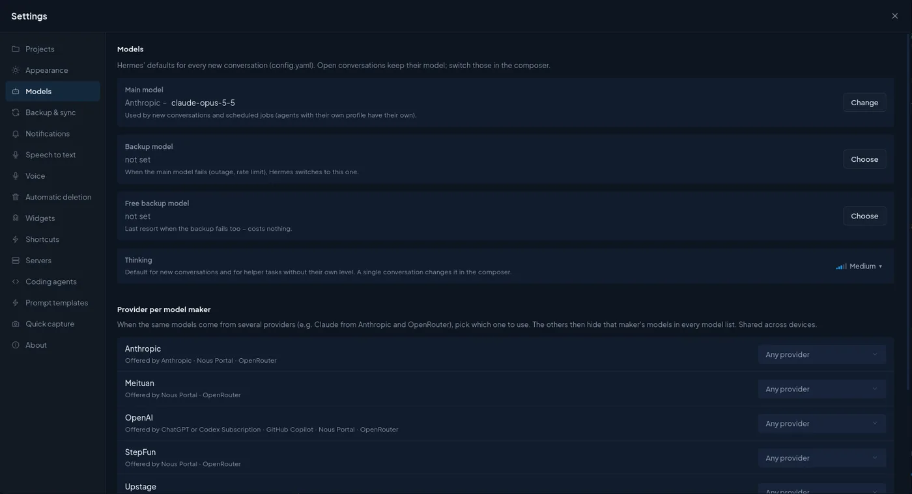
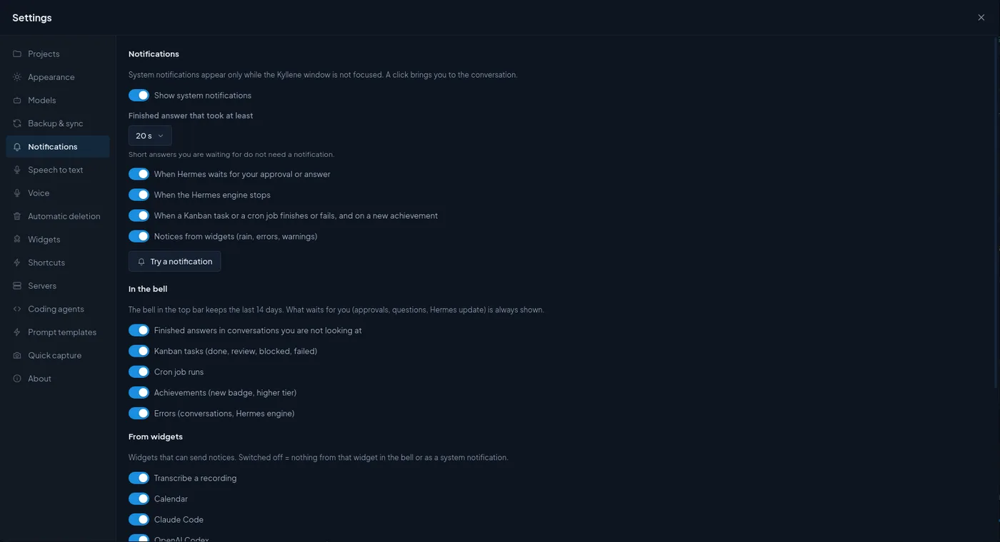

Kyllene
KylleneSettings
Everything Kyllene itself remembers lives in Settings: open it with the gear icon in the top bar, with
Ctrl+,, or from the palette (Ctrl+K › Settings). The dialog has one tab per area on the left and remembers the
tab you used last.
Settings that belong to Hermes (skills, MCP servers, keys, cron jobs, Hermes' own config) are not here but in the Hermes window: see Manage Hermes in Kyllene.
Settings in its own window: Open in a new window in the dialog's header moves Settings into a window of its own. There the tabs Appearance, Notifications, Shortcuts, Prompt templates, Servers and About work as usual, and a change of the theme or the language shows in both windows at once. The other tabs use what runs in the main window (conversations, projects, tasks); in the window they say so and offer Open in the main window, which shows that tab there. ✕ closes only the window; Back to the main window returns Settings to the main window on the same tab. More: dialogs in their own window.
Some choices are kept only on this computer (folders, devices, microphone), others travel to your other computers when sync is on. Each section below says which.
Tabs: Projects · Appearance · Pet · Models · Backup & sync · Notifications · Speech to text · Voice · Automatic deletion · Widgets · Shortcuts · Servers · Coding agents · Prompt templates · Quick capture · About · Status bar

Projects
Where new projects go and how they are stored. More about projects: Projects and tasklists.
| Option | Default | What it does / when to change it |
|---|---|---|
| Folder for new projects | ~/KylleneProjects |
Each new project gets its own subfolder here. You can still pick another folder when you create a project. Default puts the suggested folder back. Only this computer. |
| Storage | This computer | Where new projects are stored: This computer (a plain folder), GitHub (git) (Kyllene commits and pushes after every agent answer that changed files) or Cloud (Google Drive, OneDrive or Dropbox). Each project can be switched later on its own Storage tab. |
| GitHub owner (with GitHub) | your signed-in account | Account or organisation that gets the new repos. Needs the GitHub CLI (gh auth login). Move existing projects to GitHub… gives each ticked project a private repo; folders stay where they are. |
| Memory tool for „Remember“ | empty | Name of a Hermes tool with one text parameter (for example from a memory plugin). When set, messages outside projects get a Remember button that hands the message to this tool. In a project conversation, Remember always writes to the project memory. |
| Memory tool label | the tool name | The name shown on that button. |
| Archived projects | – | Projects you archived. Restore brings one back; its conversations come back with it. |
Appearance
| Option | Default | What it does / when to change it |
|---|---|---|
| App language | Czech on a Czech system, otherwise English | English or Czech, the same choice as EN / CS in the status bar; every open window of the app follows it. |
| Theme | built-in look (Navy) | The list of looks. New theme starts the theme editor (from the current look or a preset; nothing is saved before Create). Import… loads a theme exported from Kyllene as .json. Restore default look switches back to the built-in look in both modes; your own themes stay. |
| Open Activity in the thread | In panel | Where a click on a turn's Activity row opens the list of tool calls: In panel = the Activity panel on the side, In place = unfolded right in the conversation. |
| Open the agent's browser by itself | on | The first time a turn works in a browser, the right panel switches to the agent's browser so you can watch. Off = open it yourself with the globe next to the turn's Activity row or from the palette. |
Light/dark mode, the colour scheme, the surface style and the language (English / Czech) sit in the status bar at the bottom, so you can switch them without opening Settings.
Pet
The animated pet that shows what the agent is doing. Hermes keeps Show the pet, the chosen pet and Size, so the CLI and TUI show the same.
| Option | What it does |
|---|---|
| Show the pet, Size | Turn the pet on or off (also in the terminal) and set its size. |
| Hatch a new one… | AI draws a new pet from your description (paid image generation; the cost is shown first). |
| Let the pet wander the window | Off by default. The pet strolls along free spots while the agent is at rest. |
| Your pets | Your installed pets: Show, and ⋯ › Rename, Personality…, Repair animations… (hatched pets), Generate moods…, Remove. Under the shown pet: its current Mood and Animation length (1–8 s per animation, free). |
| Pet brain | No memory (default), Memory, Agent or Combination: how much the pet remembers and can do; with Memory its memory note, What it knows about the user (off by default) and Skills. With its own agent (Agent, Combination) Memory and What it knows about you are the agent's own notes and the skills are copied into the agent (Pet › Pet brain). |
| Comments | The speech bubble: Mode (Off / Prepared lines, default / AI lines), Model of the lines, Longest silence (default 5 min), Language, Comment on my messages too (off by default). |
| Petdex | The public gallery: search and Adopt. |
The shown pet, its size, personality, brain, memory, skills, own moods and animation lengths and Let the pet wander the window travel to your other computers; whether the pet is shown, its spot on the screen and its mood stay on this computer. Everything in detail: Pet (česky).
Models
Hermes' defaults for every new conversation. They are written to Hermes' config.yaml, so the Hermes terminal,
cron jobs and messaging bots use them too. A conversation that is already open keeps its model; switch it in the
composer.
| Option | Default | What it does / when to change it |
|---|---|---|
| Main model | what Hermes has (the first provider you connect sets it) | Used by new conversations and scheduled jobs. Agents with their own profile have their own main model. Change opens the model picker. |
| Backup model | not set | When the main model fails (outage, rate limit), Hermes switches to this one. Pick one from a different provider. |
| Free backup model | not set | The last resort when the backup fails too; pick a free model so it never costs anything. |
| Thinking | Hermes' default (Medium) | How hard the model thinks in new conversations of the default agent, and in helper tasks without their own level. Other agents do not take this level over: without their own level they run on Hermes' default; give an agent its own in its detail › Basics › Thinking (Manage Hermes › Profiles). One conversation can change it in the composer. |
| Provider per model maker | Any provider | When the same models come from several providers (Claude from Anthropic and from OpenRouter, for example), pick the one to use: the others then hide that maker's models in every model list. Saves you from picking the paid route by mistake. Shared across your devices. |
| Model classes from benchmarks | estimated | The picker sorts models into classes. Without a key the class is estimated from the model name and price; with a free Artificial Analysis API key it comes from benchmarks. The key goes into Hermes' .env; Kyllene does not keep it. |
Providers themselves (sign-in, API keys) are connected in Hermes › Models & providers, see Manage Hermes.
Backup & sync

Backup
A backup holds the app settings (look, language, favourite models, model classes, layout), all projects (name, description, colour, icon, instructions, folder) and the main and backup models. Conversations and passwords are not part of it (conversations are in Hermes' own database).
| Option | Default | What it does / when to change it |
|---|---|---|
| Back up now / Export to a file… / Restore from a file… | – | Manual backup, a backup file you keep yourself, and restore from such a file. |
| Back up automatically once a day | on | One backup per day. |
| Keep backups for | 7 days | This device's older backups are deleted at the next backup (in the folder and in the cloud or git repo). The newest backup always stays; other devices' backups are never deleted. |
| Where to store backups | This computer | This computer (the folder below), GitHub (git) or Cloud. |
| Backup folder | the app's data folder | Pick a folder that a cloud tool syncs (Google Drive, Dropbox…) to keep backups off this computer too. |
| Backups in the folder | – | Every backup with its date; Restore… returns to it. |
Sync with other devices
Only needed when you use Kyllene on more than one computer. How it works and what travels: Sync between computers.
| Option | Default | What it does / when to change it |
|---|---|---|
| Sync this device | off | Switch it on on every computer that should share settings, projects and widgets. |
| Sync through | Synced folder | Synced folder = a folder another tool keeps the same everywhere (Google Drive, OneDrive, Dropbox, Nextcloud, Syncthing); GitHub (git) = Kyllene keeps its own clone of a private repo and commits and pushes it; Cloud = a Google Drive, OneDrive or Dropbox account connected in Kyllene. |
| Sync folder / Sync repo | empty | The place itself. Each device writes only its own file (kyllene-sync-<computer>.json), so there are no conflicts; the newest change wins. |
| Also store backups in the repo (git) | off | Puts backups into the sync repo too (backups/, newest 7 per device). |
Notifications

System notifications appear only while the Kyllene window is not focused; a click brings you to the conversation.
| Option | Default | What it does / when to change it |
|---|---|---|
| Show system notifications | on | The master switch for desktop notifications. |
| Finished answer that took at least | 20 s | Short answers you are waiting for anyway do not need a notification. Raise it if you get too many. |
| When Hermes waits for your approval or answer | on | A command to approve or a question with choices. Keep it on: a turn stands still until you answer. |
| When the Hermes engine stops | on | Hermes exited or crashed. |
| When a Kanban task or a cron job finishes or fails, and on a new achievement | on | Background work you did not start by hand. |
| Notices from widgets | on | Rain alerts, errors, warnings from widgets. |
| Try a notification | – | Sends a test, so you can check the desktop really shows them. |
In the bell (the bell in the top bar keeps the last 14 days; things that wait for you are always shown): finished answers in conversations you are not looking at, Kanban tasks, cron job runs, achievements and errors, each with its own switch (all on).
From widgets: one switch per widget that can send notices. Off = nothing from that widget, neither in the bell nor as a desktop notification.
Skill and memory changes in the thread: when Hermes updates a skill or saves to its memory, Kyllene shows it as a
muted line in the conversation. How much Hermes' review after a turn reports is Hermes' own setting
display.memory_notifications (off / on / verbose); this section only shows its current value.
Speech to text
Local transcription of recordings and dictation with Whisper running inside Hermes. The audio stays on this computer. More: Voice.
- System check lists what transcription needs (Hermes' Python, Whisper, the model, disk space, memory, an NVIDIA card for speed, speaker detection). A missing part has Fix (Kyllene installs or downloads it) and Fix with AI (hands the problem to Hermes in a conversation).
| Option | Default | What it does / when to change it |
|---|---|---|
| Local speech to text | off | Turning it on installs what is missing and downloads the chosen model. |
| Detect speakers | on | Marks who is speaking in a transcript (Speaker 1, 2…), on this computer, no account. Installs sherpa-onnx and two small models (~90 MB). |
| Model for recordings | large-v3 |
large-v3 (most accurate, ~2.9 GB, slow on a processor), turbo (almost as accurate, several times faster, ~1.5 GB), medium (~1.4 GB), small (~463 MB, a rough draft). Each shows an estimated time per hour of recording. Without an NVIDIA card, turbo is the usual choice. |
| Language | as in Hermes | The language spoken in recordings. A fixed language is more reliable than detection. |
Voice
Dictation, reading answers aloud and the voice modes. Explained in Voice.
- The top shows a read-only overview: which dictation engine is used (Automatic = the local Whisper model, Hermes' speech recognition only when the local engine cannot run), which models and which reading voice Hermes has. The buttons lead to Hermes › Config, where Hermes' own voice settings live.
| Option | Default | What it does / when to change it |
|---|---|---|
| Same model as for recordings transcription | on | Dictation uses the recordings model. Turn it off to dictate with a smaller, faster model (on a processor turbo takes about half the time of large-v3). |
| Dictation model | – | Only downloaded models are offered. Only this computer. |
| Microphone and speaker test | – | Say something records five seconds and shows the transcript (never sent anywhere); Play sample plays Hermes' reading voice. |
| Dictation shortcut | Ctrl+Space |
Hold to dictate, release to transcribe into the message. Change sets your own keys. |
| Voice mode | Manual | Manual: microphone button or shortcut, you send and read yourself. Semi-automatic: hold the shortcut, speak, release; Enter sends; finished answers are read aloud. Automatic: start listening once; a pause sends, the answer is read, then it listens again. The microphone is always off after a restart. |
| Reading language | the app language | The language answers are read in. It does not translate; Edge voices pick a matching voice. |
| Speech volume threshold | 0.025 | How loud sound must be to count as speech (Automatic mode). Raise it in a noisy room. |
| Pause before sending (ms) | 900 | How long a pause sends the message in Automatic mode. Raise it if you get cut off while thinking. |
| Wake word on this computer | off | Listens for Hermes' wake phrase with Hermes' local detector; the room audio stays on this computer and listening pauses while you dictate or Kyllene reads. Prepare the wake-word engine and model in Hermes first; Kyllene does not install them. When Hermes itself already listens (/wake), Kyllene does not take over. |
All voice choices are saved only on this computer (each computer has its own microphone).
Automatic deletion
Two independent parts, each with its own switch and age. Both are off by default: nothing is deleted until you switch a part on.
| Option | Default | What it does / when to change it |
|---|---|---|
| Kanban archive › Delete old archived cards automatically | off | Checked shortly after start and then daily, on every board. |
| Time in the archive | 30 days | A card is deleted once it has been archived longer than this (7 days … 6 months). |
| Clean up now… | – | Deletes, on every board, the cards archived longer than the limit, with comments, history and attachments. Shows the count first. Never deleted: cards an open card still waits for, and the sources of moved cards. |
| Conversations › Delete old conversations automatically | off | Checked a minute after start and then daily, on this computer, in every Hermes profile. Switching on first shows what would be deleted. |
| No activity for longer than | 3 months | 30 days … 6 months. |
| Delete old conversations now / Preview… | – | Shows the list first and asks; works with the switch off too. Never deleted: pinned conversations (in Hermes or in Kyllene's favourites), conversations open on this computer or with an unsent draft, running ones, conversations a Kanban card points to, and messaging, cron and Kanban worker conversations. |
| Timeline between computers › Delete old synced timeline records | on | Your computers exchange what ran on them through the sync folder, one file per month; older months are removed there. Hermes' own data is not touched. |
| Keep for | 6 months | 3 months, 6 months or a year. |
Widgets
The widgets themselves (what they show, how to make your own) are explained in Build your own widget. This tab manages them.
- AI services usage: the built-in Claude Code, Codex and OpenRouter widgets with their version, state (logged in, not connected) and Widget settings. They read the logins on this computer; nothing private is synced.
- System widgets (Calendar, Mail, Google Tasks, GitLab, Teamwork, Weather): part of the app, they update with every new version. You switch them on in the Widgets menu and connect your own accounts in their settings. Their settings sync to your other computers.
- Widgets: your own widgets. With sync on they live in the sync folder (every device gets them), otherwise in the app's local folder (Open folder). A widget with unpublished changes has Publish (see Publishing).
| Option | Default | What it does / when to change it |
|---|---|---|
| Approve widget code from other devices | on | New or changed widget code that arrives by sync runs here only after you approve it on this computer; changes made on this computer approve themselves. Turn it off only if you are the only one who can write to the sync place. |
Custom achievements: your own achievements as one <id>.json file each in the shown folder (synced when sync is
on). Files that cannot be used are listed with the reason.
Shortcuts
Every keyboard shortcut of the app, grouped by where it works. Most are fixed; the dictation keys can be changed here (Change), the pet commands (choose, show / hide, its own window, hatch, line history) and the commands that open a dialog in its own window (Hermes › System, Loops › runs, Kanban, hatching a pet, transcribing a recording) get a key of your own here (Set), widget shortcuts in the widget's ⋯ › Widget settings, the system-wide quick-capture keys in your desktop's settings. The full list: Keyboard shortcuts.
Servers
Hermes on another machine (a VPS, a home server), reached over SSH. Conversations on a server are visible from every computer that has it set up and work with that server's files and terminal. Only this computer.
| Field | What to enter |
|---|---|
| Name | Any name you will recognise in the menus. |
| SSH host | As for the ssh command: a host from ~/.ssh/config or user@192.0.2.5:22. |
| Hermes folder on the server | Optional; only when Hermes is not in the usual place. |
Add and test checks the connection. Needs a key login without a password (ssh <host> must work without
prompting) and Hermes installed on the server. Kyllene uploads a small bridge to ~/.cache/kyllene on the server
and runs it over SSH; nothing is exposed to the internet. Without a server, New conversation on a server stays
disabled.
Coding agents
What each coding agent needs on this computer. More: Coding agents.
- Agents: Claude Code and Codex, each with its state (Ready or what is missing): the command installed, the agent's own sign-in, the Hermes provider it runs on, and its current limits from the usage widgets. Check again after you install or sign in.
- Folders with projects (default
~/Projectswhen it exists): a new Claude Code / Codex conversation offers the subfolders of these folders, next to your Kyllene projects and recently used folders. Add your code folders here. Only this computer.
Prompt templates
Saved prompts you start with one click from the palette (Ctrl+K) or from an empty conversation.
- New template, then Name, Description (shown in the palette) and Prompt.
- Variables:
{{Name}}is a field to fill in,{{Name|default}}a field with a default value. Before the start a short form asks for them; a repeated name is asked once. - Run starts the template right away. The app ships three examples (Summary, Explain code, Write an e-mail); edit or delete them and your own list replaces them. Templates are the same on every device.
Quick capture
A small window you open from anywhere, even with Kyllene in the background. Explained in Quick capture.
| Option | Default | What it does / when to change it |
|---|---|---|
| Icon in the system tray | on | Its menu opens the capture or takes a screenshot. On GNOME it needs the AppIndicator extension. |
| System-wide shortcut | off (suggested Ctrl+Alt+Space) |
Works in every app. The desktop asks you once to confirm it; change the keys later in the system settings (Apps › Kyllene › Global shortcuts). |
| Try it | – | Opens the capture window now. |
About
The Kyllene version, the Hermes versions this release was tested with (and the oldest one it supports) next to the Hermes you have, and Check for updates. Kyllene checks by itself shortly after start and once a day; a new version opens a window with What's new and Update and restart. A build from source code does not update itself.
The status bar
The strip at the bottom of the window holds quick switches that are not in Settings:
| Part | What it does |
|---|---|
| connection | Whether Kyllene is connected to Hermes. |
| approvals | Command approvals: manual (asks about every risky command), smart (a helper model decides and asks when unsure) or off, for this conversation or for all (Hermes setting). |
| language | EN / CS: the app language. |
| surface, colours, light/dark | The surface style, the colour scheme and light or dark mode. |
| stop all | Stops every running answer at once. |
To hide parts you do not need, run Edit layout from the palette (Ctrl+K): the eye hides or shows a part, the
grip drags it elsewhere.